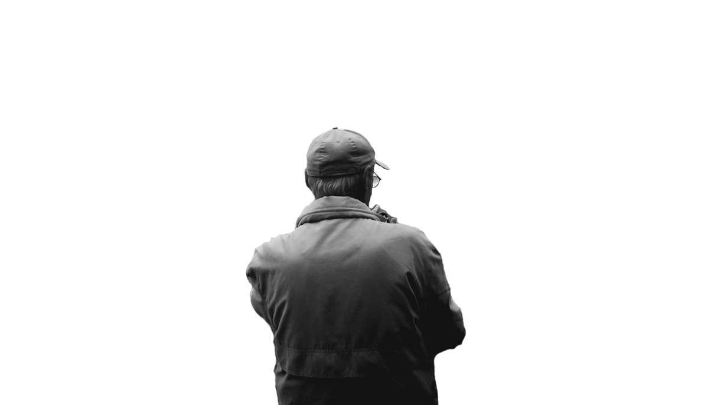
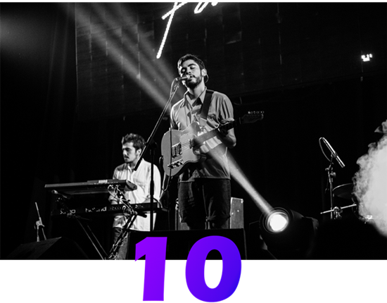
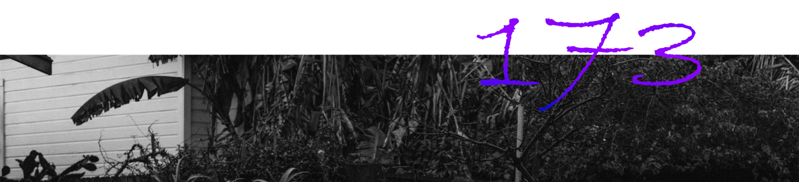
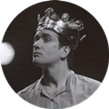
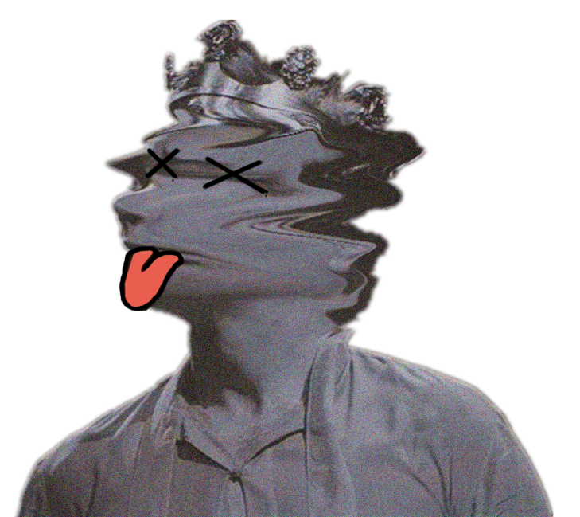

CYJ
爱好
简介
联络

爱好
我独自一人对自己的灵魂
满怀着巨大的爱情 ———— 茨维塔耶娃
■ 联络
简介
我最大的爱好是学习，感悟学习的真谛是我追求的目标！ 傍晚或者夜幕降临之时，出来跑步，白天工作上的困扰也能通过夜跑获得精神上的放松而迎刃而解，夜色浪漫的江岸景色能让压抑的心灵复归平静。
点击查看和我一起打羽毛球的小伙伴→
『夜跑⚡』

『这是一个名为“Why we are run?”的视频』
Your browser does not support the video tag.
『这是一个名为“Complicated”的音频』
喜欢听Avril和永动机。《Complicated》是加拿大唱作女歌手艾薇儿·拉维尼演唱的一首流行歌曲，歌词、音谱由艾薇儿·拉维尼、劳伦·克里斯蒂、斯科特·斯波克、格雷厄姆·爱德华兹合作编写。该歌曲作为推广专辑的首支单曲，于2002年5月14日通过阿里斯塔唱片公司发行，后被收录在艾薇儿·拉维尼的首张录音室专辑《Let Go》。
点击查看更多的音频和mv→
『music』

我的简介
我是一个虚心接受前辈指导，接受上级批评的人，有错会改更是难得的品质。利用业余时间兼职期间，让我懂得了人要勤奋，要上进，有耐心，懂得从小做起，做好每项工作，个人的专业知识及拓展知识要富，这样做起事来才会得心应手。
我是一个兴趣广泛的青年，喜欢舞蹈，听音乐，看书，运动，手工制作，画画等。虽然我对其中的每一个技巧不精湛，但可以从多面的塑造自己，更加乐观，做事情会翛然而来，翛然而往，不忘其所始，不求其所终，微笑接纳世界!曾在大学每一学年的艺术选课上，选择艺术体操，健身舞蹈，儿童舞蹈恰恰等，成绩良好;体质健康排在第一位，每年的体能测试都会以优秀结束，而且一周恰好抽出两三天时间锻炼身体，如慢跑，羽毛球等，这不是无用的，世界是很小的，我也结识了一些志同道合的朋友，逐渐在一定的场合也健谈了起来，也耳闻了曾经不知道的事情，所以无论是做事情还是懂得，我相信可以从新的幼稚的一方面做起，逐渐地做事情会变得得心应手。

管是什么人，都会感到时光在身上流动，受到这种启迪之后，自己也想像风中的芦花，水里的浮萍一样流动。但是我把这种流动深藏在心底，不让它表现出来。————王小波《红拂夜奔》
-Mail:
hangu1116@gmail.com
or
Tel. 15000000000-.
or
微信
or
微博-.
-.My Adress:
ShangHaishi
SongJiangqv
DongHua University
Post Code:201600-.
© 2017 CYJ
·
Made with heart in DongHua University
